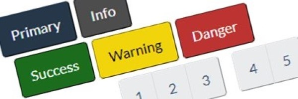
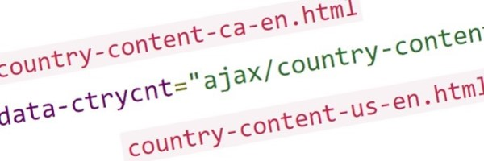
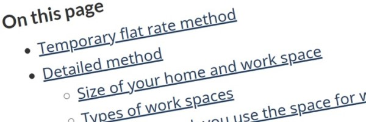

Components – WET4 – CRA user-centred design guide
-
Alerts
Use to provide contextual feedback messages for typical user actions. Choose from a handful of available and flexible alert messages.
Tags: Colour, Attention
-
And/or design
Use to clearly demonstrate that there are options or that there are content blocks that are complimentary/associated.
Tags: Links, Counter, Number
-
Archived content
Use to help users identify Web pages that have been archived online.
Tags: Overlay, Invisible, Visible, Show, Hidden, Close, Exit, Deleted
-
Badges
Use badges (numerical indicators) to highlight the number of updates, new or unread items associated with a link.
Tags: Links, Counter, Number
-
Borders
Use to add single or multiple borders to design elements in order to separate or call attention to content. Additionally, remove default borders or sharpen corners that appear in design components such as a "well".
Tags: Horizontal rule, Rounded, Sharpened corners
-

Buttons
Use buttons to create a call to action that entices the user to submit content from a form, or to take users to a webpage that provides additional information.
Tags: Colour, Links
-
Calendar
Use the calendar of events interface to navigate a chronological list of events.
Tags: Tables, Dates
-
Carousel
Use a carousel to tab or cycle through content in a slide show format.
Tags: Tabs, Invisible, Slideshow, Show, Images, Slider, Details, Summary, Expand, Gallery
-
Charts and graphs
Use a charts to tab or cycle through content in a slide show format.
Tags: Graphics, Pie, Bar, Values
-
Checklists
Use when there is a list the user needs to go through and ensure every item is covered and accounted for.
Tags: Checkboxes, checkmarks, interactive, eligibility
-
Code
Use to emulate source code and display it in monospace font.
Tags: Coding, Prettify
-
Contact us
Use to provide access to multiple contact options and present them consistently in a variety of contexts.
Tags: interactive questions, my account, my business acount, online, phone, tty, call, telephone numbers, hours
-

Country identifier
Use country identifier to load or replaces an element's content based upon the user's country.
Tags: Location
-
Data Ajax
Use to allow parts of one webpage to load or update within a second webpage (repurpose content).
Tags: insert, content, call, loader, wrapper
-
Data inview
Use data inview to display an overlay when a section moves out of the viewport.
Tags: Overlay, Visible, Invisible, Show, Hidden, Close, Exit, Bar, Navigation
-
Data picture
Use to allow a webpage to specify different image sources to display, based on media queries.
Tags: Images, Resolutions
-
Dismissable content
Use a footnote to note a reference, citation, or comment that provides details about something on that page. It is non-critical content that relates to the main text, and is always at the bottom of the page.
Tags: References, Links, Cites
-
Equal height (Equalize)
Use to make grid cells the same height. Make the inner elements (panels, wells and so forth) inherit the height from the parent grid.
Tags: Panels, Wells, Borders
-
Expand/hide
Use to create collapsible expand and hide widgets that a user can select to show or hide content.
Tags: Accordion, collapse, hidden, options
-
Feedback
Use to allow users to provide feedback or report any problems they experience with a specific Web page or the Web site in general.
Tags: Errors, validation, issues, comments, mistakes
-
Footnotes
Use a footnote to note a reference, citation, or comment that provides details about something on that page. It is non-critical content that relates to the main text, and is always at the bottom of the page.
Tags: References, Links, Cites
-
Forms and form elements
Use forms to collect and transmit information from users in a pre-defined format.
Tags: feedback, validation checkboxes, radio buttons, labels, input, selects, textarea, file, date picker, submit, clear, auto-complete
-
Grids
Use a grid system (a series of rows and columns that house content) to create page layouts.
Tags: Responsive, Viewports, Devices, Resolution
-
Headings
Use a heading to title a section of content that immediately follows it. Headings are large, bold, concise text that are hierarchical in nature.
Tags: Size, Text
-
Icons
Use one of the two icon sets, Glyphicons or Font Awesome for decorative purposes.
Tags: Colour, Images, Fonts
-
Images
Use images to visually represent a noun (person, place, thing) or a verb (action).
Tags: Thumbnais, Responsive, Photos, Visual, Decorative
-
Interactive questions (field flow)
Use to present people with a sequence of simple questions that leads to the specific answer they need to continue with or complete their task.
Tags: decision tree
-
Invisible and visible content
Use to show or hide content. There are styles specific to assistive technology (aid screen-reader users), responsive design, general usage and print.
Tags: Printing, Hidden, Devices, Viewports, Resolution
-
Keyboard keys
Use to mimic the keys of a computer keyboard.
Tags:
-
Labels
Use labels to call attention to a section of content by adding short, text-based bits of supporting information.
Tags: Colour, Attention
-
Links
Use a link (text and/or image) to take a user to another webpage, jump to another location within the same webpage, or perform a user-control function determined by client-side scripting (JavaScript).
Tags: Hyperlinks
-
Lists
Use to display a number of connected items in a consecutive manner. Typically list items appear one below the other.
Tags: Ordered, Unordered, Icons, Definition, Alpha, Roman, Columns, Bullets, Steps
-
Margin proximity
Use to increase or decrease the proximity of one object to another. This adjusts the white space between two elements to suggest whether items are related or unrelated.
Tags: Spacing, Margins, Left, Right, Top, Bottom
-
Math calculations and equations
Use to display mathematical formulas within a page.
Tags: Variables, Calculations
-
Opacity
Use to apply an opacity/transparency to a foreground item so the background becomes visible.
Tags: invisible
-
Pagination
Use a pagination index for long documents that are best broken up over several pages.
Tags: Buttons, Links, Navigation
-
Panels
Use to create a visual grouping of content. Panels have colour themed options, as well as offer a distinct header and footer.
Tags: Boxes, Menu, Navigation, Layout
-
Popups
Use to display images and other content in a dialog box, either individually or as part of a gallery.
Tags: lightbox, overlay, modal, gallery
-
Quotations
Use to cite a group of words by someone other than the original author or speaker.
Tags: blockquote
-
Session timeout
Use to create a session inactivity timeout that warns users when their session is about to expire.
Tags: exit, redirect, time out
-
Tabbed interface
Use to separate related content into different panes that are viewable one at a time when the respective tab is clicked.
Tags: expand, hide, tabs, invisible
-

Table of contents
Use to provide an outline for the content of a single page that has multiple subsections.
Tags: On this page
-
Tables
Use to organize data into rows and columns in order to create data cells.
Tags: Tabular, Zebra striping, Hover, Responsive, Colour, Table validator
-
Text editing effects
Use to indicate text edits on a page.
Tags: Edits, Versions, Documents
-
Text formatting
Use to apply a style, size or alignment to any text.
Tags: bold, italics, underline, align, left, right, center, wrap, truncate
-
Toggle
Use to toggle elements between on and off states.
Tags: expand hide collapse accordion
-
Variables
Use when there is reference to a variable like “x.”, "n" or "y" within a sentence (a non-mathematical phrase).
Tags: Calculations
-
Video and audio
Use video clips and audio recordings to complement or enhance text.
Tags: Multimedia player, transcripts, closed captions, licensing
-
Wells
Use to spotlight content by placing it in a light grey box.
Tags: Layout, Boxes